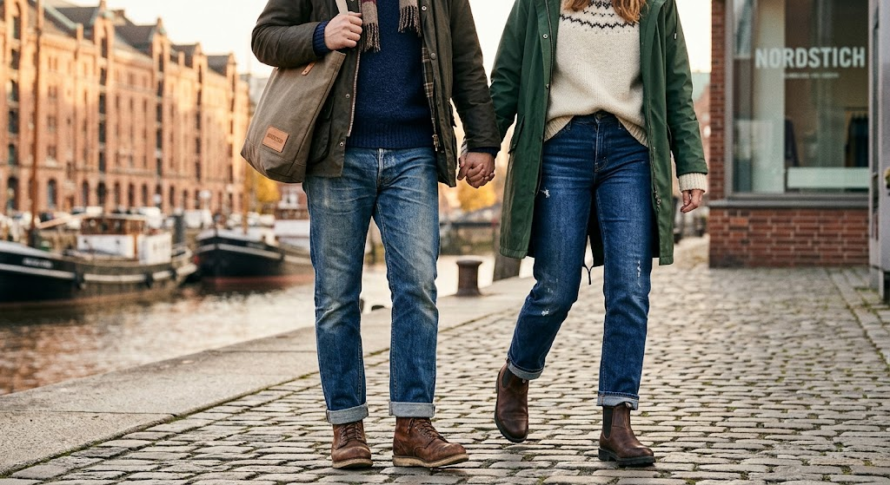

HAMBURG · DENIM · SEIT ÜBER 30 JAHREN
Jeans, die
bleiben.
Manche Dinge kommen nie aus der Mode. Eine gute Jeans gehört dazu. Entdecken Sie Denim-Klassiker, besondere Passformen und persönliche Beratung im Nordstich.
Das ist Nordstich.Lieblingsstücke für jeden Tag.

made to be wornMEHR ALS NUR EINE JEANS
Gute Passform.
Gutes Gefühl.
Bei Denim machen die Details den Unterschied. Schnitt, Material und Passform beeinflussen, wie sich eine Jeans anfühlt und sitzt.
Es erwartet Sie eine große Auswahl an Denim und persönlicher Service. Wir helfen Ihnen, das Modell zu finden, das wirklich zu Ihnen passt.
Machen Sie einen Termin mit uns ausGUTE GESELLSCHAFT
Unsere Markenwelt.
Denim-Klassiker und zeitlose Lieblingsstücke. Entdecken Sie die Labels, die unsere Auswahl ausmachen.
WIR FREUEN UNS AUF SIE
Bis bald in
Hamburg.
Besuchen Sie uns im Nordstich in Hamburg.
Nordstich HamburgStraße in Hamburg 1
22041 Hamburg